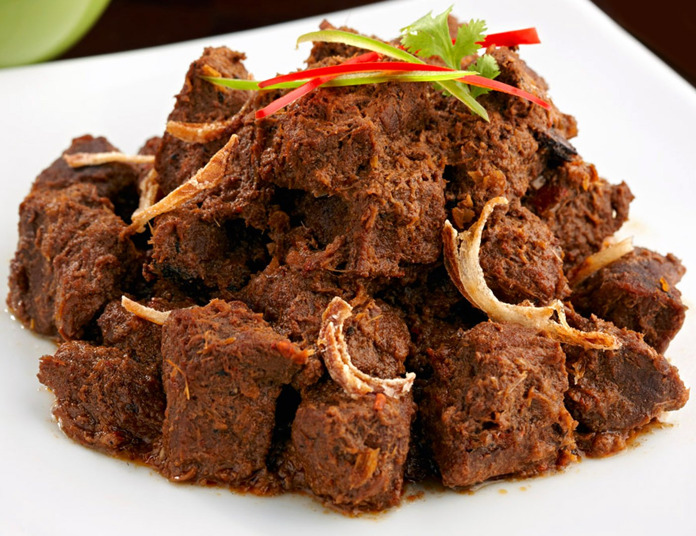

Beef-Rendang Recipes

Description
Beef Rendang is a flavorful West Sumatran dry curry that's made with beef, that's cooked together with a spice paste and coconut milk until fork-tender.
It's then fried together with the remaining braising liquid until the liquid caramelizes around the beef, coating it with an insane amount of flavor.
Ingredients:
- 1 teaspoon salt
- 1 teaspoon ground coriander seed
- 1/4 teaspoon ground turmeric
- 2.5 centimeters fresh ginger (roughly chopped)
- 4 large cloves garlic (roughly chopped)
- 200 grams shallots (4 large roughly chopped)
- 3 tablespoons chili pepper flakes (to taste)
- 2 tablespoons vegetable oil
- 900 grams beef shanks or shortribs (cut into large cubes)
- 2 stalkslemongrass (white part only, smashed)
- 4 kaffir lime leaves
- 2.5 centimeters galangal (sliced into coins)
- 2 packs coconut cream powder (or 1 can coconut milk)
- 1 tablespoons coconut sugar (brown sugar can be substituted)
Cooking Steps:
- Add all the salt, coriander, turmeric, ginger, garlic, shallots, and chili flakes to a food processor and run until there are no clumps left and you have a smooth spice paste. You'll need to scape the bowl down a few times.
- Add the oil to a heavy bottomed pot and heat over medium high heat until shimmering. Fry the beef in batches, allowing each surface to brown before turning. Transfer the browned beef to a bowl and repeat with the remaining meat.
- Add the lemongrass, lime leaves and galangal to the hot oil and fry until fragrant. Transfer to the bowl with the browned beef, leaving the oil in the pot.
- Turn down the heat to medium low, and then add the spice paste. Fry, stirring constantly until very fragrant and most of the moisture has evaporated (about 10-15 minutes). If the paste starts burning, reduce the heat and add a bit of water.
- Rehydrate the coconut cream powder in 2 cups of water and then add it to the pot along with the palm sugar Return the beef and herbs to the pot, stir to combine the turn the heat down to medium low and loosely cover with a lid (you want some steam to escape). Stir the rendang periodically and simmer for 3-4 hours until the meat is very tender.
- Once the meat is tender and most of the liquid has evaporated (about 4 hours), remove the lid and turn up the heat.At this point there should be quite a bit of oil in the pot from the meat so you're essentially frying the sauce and concentrating the flavors.You'll need to stir the mixture constantly to prevent it from burning, but you want to evaporate as much liquid as you can without burning the meat.Keep in mind that oil does not evaporate, so you will still have a bit of oil at the bottom of the pan.
- The rendang is done when there is almost no sauce left and the meat is dark brown. Ideally you'll let this sit overnight for the flavors to evenly distribute into the meat. During this time, the meat will turn chocolate colored and the flavors will deepen. Serve the beef rendang with steamed rice.